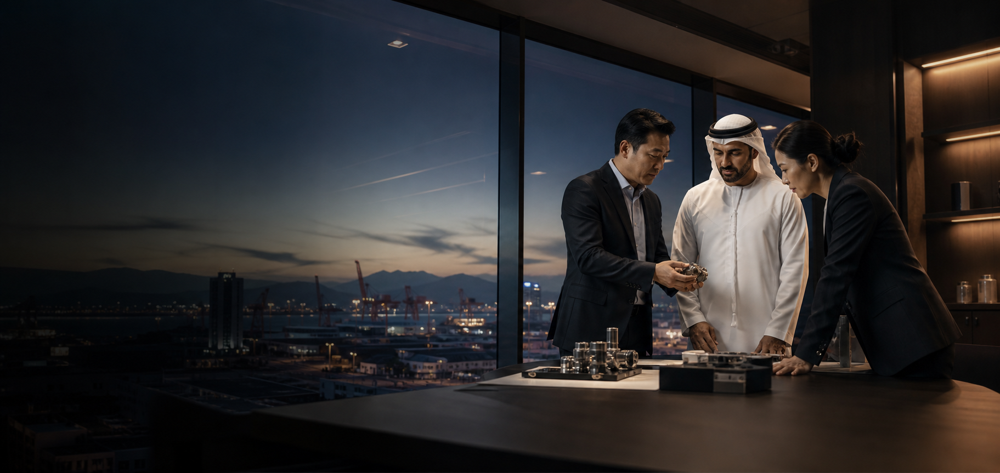

Commercially grounded
We keep product, price, timing, quality and risk connected in every recommendation.

International B2B · China ↔ UAE
We are the operational link between UAE B2B buyers and manufacturers across China.
Our B2B role
Cross-border B2B sourcing fails when assumptions replace evidence and communication loses context.
BRIDGE EAST gives UAE companies a consistent coordination layer in China. We turn commercial requirements into clear supplier conversations, verify critical claims, maintain visibility through production and help teams make decisions with better information.
Our role is not to remove every risk. It is to identify, reduce and manage the risks that can be addressed through disciplined sourcing, validation and follow-through.
Our principles
We keep product, price, timing, quality and risk connected in every recommendation.
We distinguish what a supplier says from what can be reasonably verified.
We reduce ambiguity across languages, expectations and working styles.
We stay involved after sourcing so agreements remain visible during execution.
Across the deal
Work with us